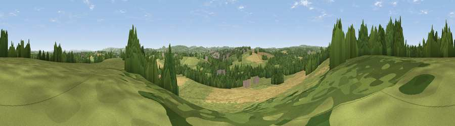

Viewpoint near Spring Gardens
#24987 in England · top 44% of its area beats it · near Spring GardensWhere it is
The exact computed spot (ST 77025 50525). Click the marker for map links.
The view, rendered

A 360° render of this exact spot computed from the terrain model, tree cover and land cover — summer colours, afternoon light, calibrated against photographs of famous viewpoints. Real trees, hedges and buildings will differ in detail.
The panorama
Grey silhouette: terrain skyline in each direction (720 bearings, Earth curvature and refraction included). Dashed green: skyline with trees (+15 m) and buildings (+8 m) as obstacles. Blue strip: how far the ground is visible on each bearing.
Where the view opens
Wedge length = distance to the farthest visible ground on that bearing (vegetation-aware). Rings at 10, 25 and 50 km.
What fills the view
49% grassland · 24% cropland · 24% woodland · 3% built-up
Angular shares of the visible panorama (visual magnitude), not map area. Landscape diversity 0.49 (0–1 Shannon).
Key numbers
More beautiful places nearby
The staircase of upgrades: each row has a higher view potential than everything closer. Driving times are estimates from straight-line distance, calibrated against real road routing — check an actual route before setting out.
| Place | Direction | Drive | Score |
|---|---|---|---|
| Viewpoint near Great Elm | WSW · 3 km | ~8 min | 50.6 |
| Viewpoint near Chapmanslade | ESE · 5 km | ~11 min | 55.4 |
| Postlebury Hill | SSW · 8 km | ~17 min | 62.7 |
| Cley Hill | SE · 9 km | ~18 min | 76.8 |
| Viewpoint near Lamyatt | SW · 18 km | ~31 min | 77.8 |
| Beacon Batch | WNW · 29 km | ~46 min | 79.4 |
| Bleadon Hill [Loxton Hill] | W · 41 km | ~60 min | 79.6 |
| Viewpoint near Stinchcombe | N · 48 km | ~68 min | 80.5 |
51.25342, -2.33059 · source: screening · position refined by local search. Computed location — check access rights before visiting.